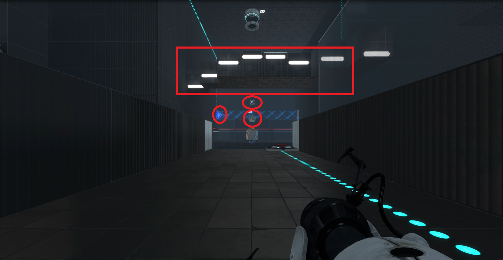
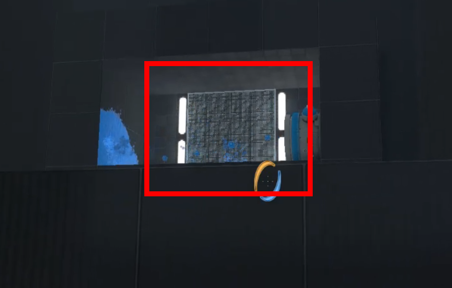
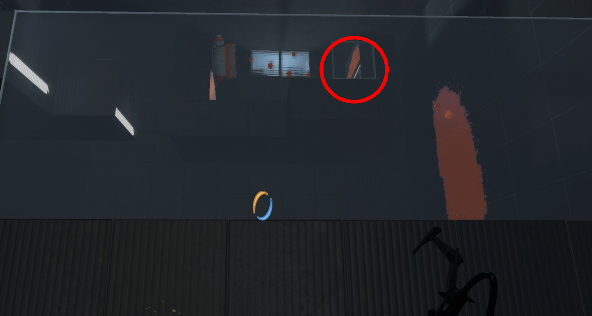
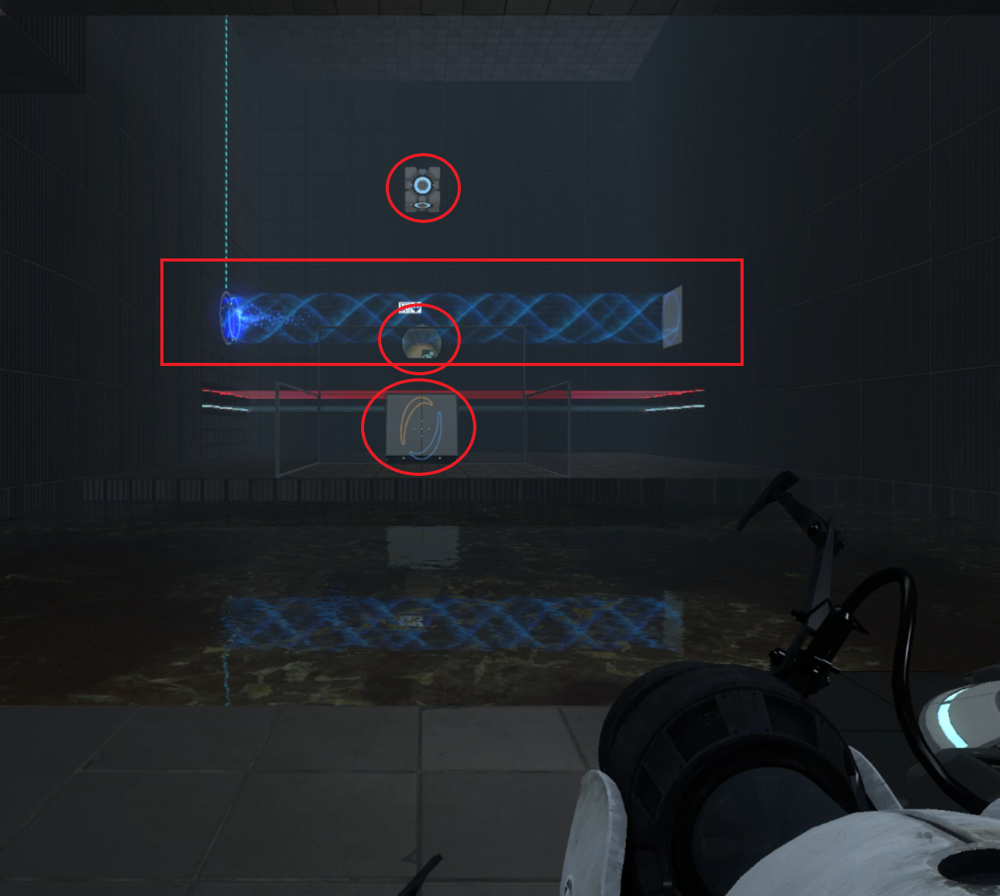
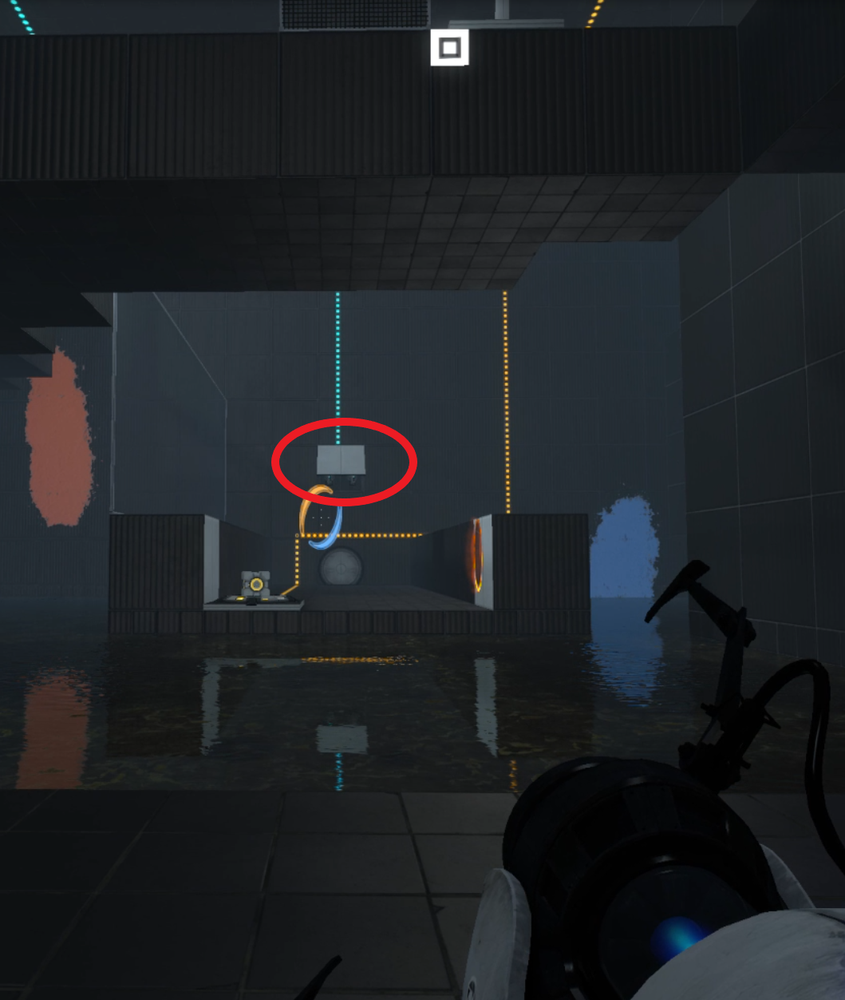
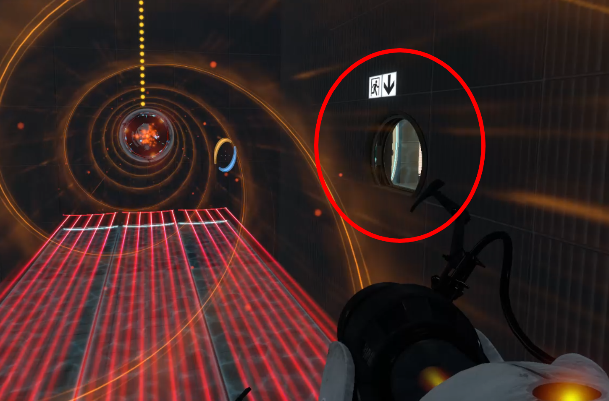
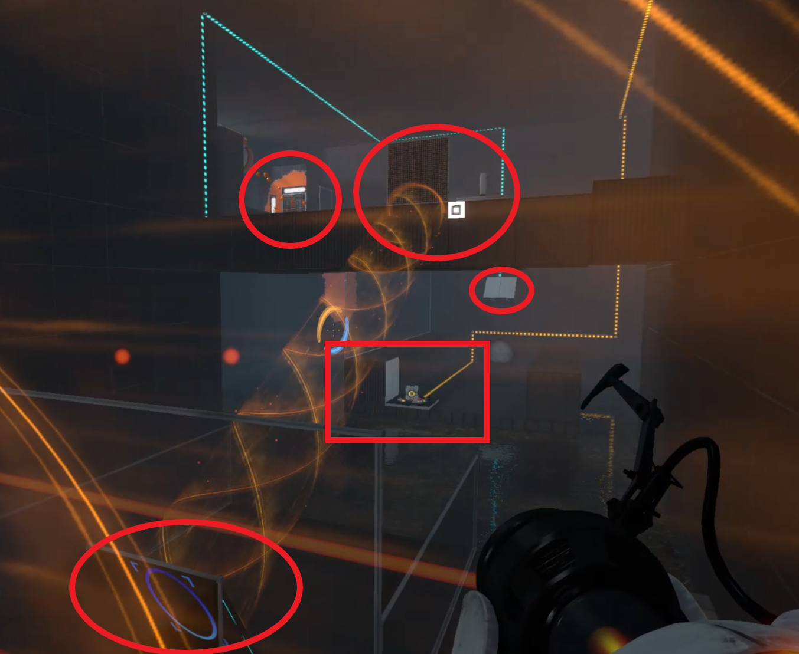
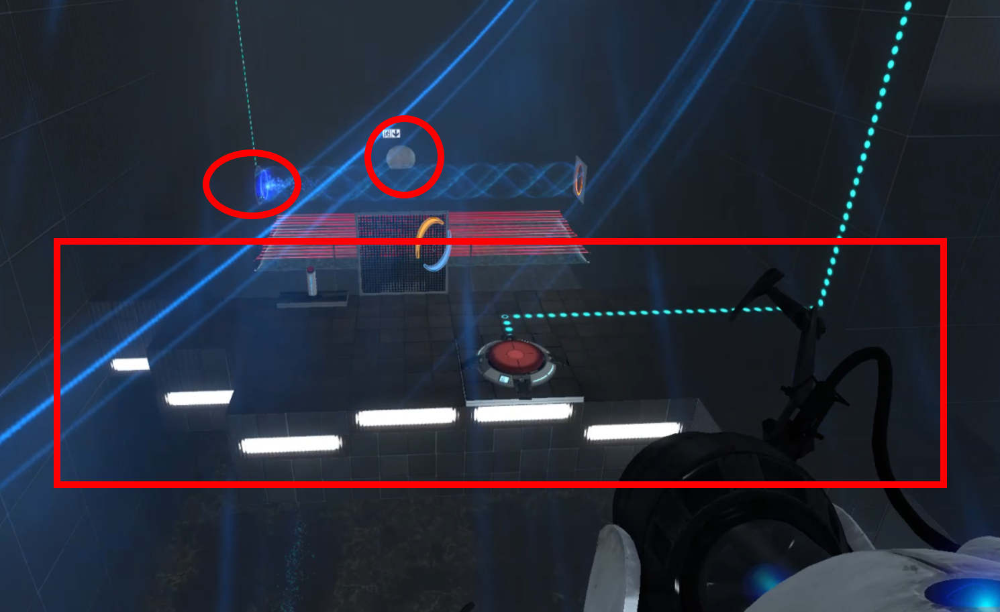
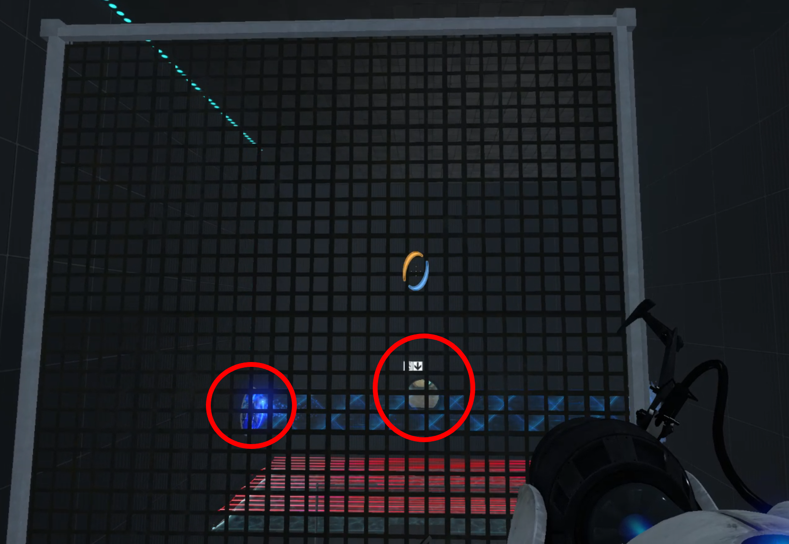
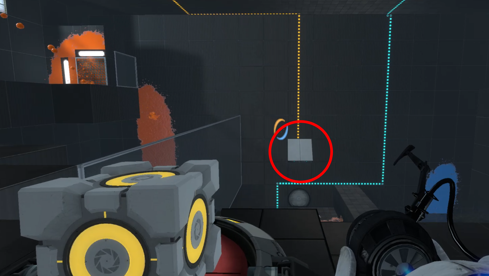

Description
In this puzzle the player has to use the tunnel to transport all the elements ( box, paint and the player itself), in addition the player has to use inertia to jump over the platform.
Comments
As you will appreciate, the player can see the exit and the main objectives almost all the time.
At the beginning of the level the player can see the main objectives: The box dropping, the tunnel, the exit and the upper platform.
If the player turn to the right, then he/she can see the blue paint and where to put a portal to get the paint.
If the player turn to the left, he/she can see the orange paint. But it is to difficult that the player can see where to put a portal to get the paint.
When the player goes to get the cube, he/she can see all the short-term and long-term goals. Again, the player can see the exit.
When the player cross to the other part of the level, the first he/she can see is the panel with a tilt. In a long-term goal, he/she can use this panel to go to the upper platform. And in a short-term goal, he/she can use it to paint the ground.
This is important, when the player through the tunnel, he/she can see the exit again.
When the player reach the source of the tunnel, is able to see all the interesting places to solve this part of the puzzle, and the upper platform as a long term-goal.
If the player uses the tunnel to go to the roof, he/she is able to see the exit and the tunnel again. And for the first time is able to see the entire upper platform.
Once the player reach the upper platform, the first thing that he/she see is the exit in front of him/her and the tunnel.
Finally when the player places the cube the first thing he/she see is the tilted panel moving, giving a hint for the next movement.
Return